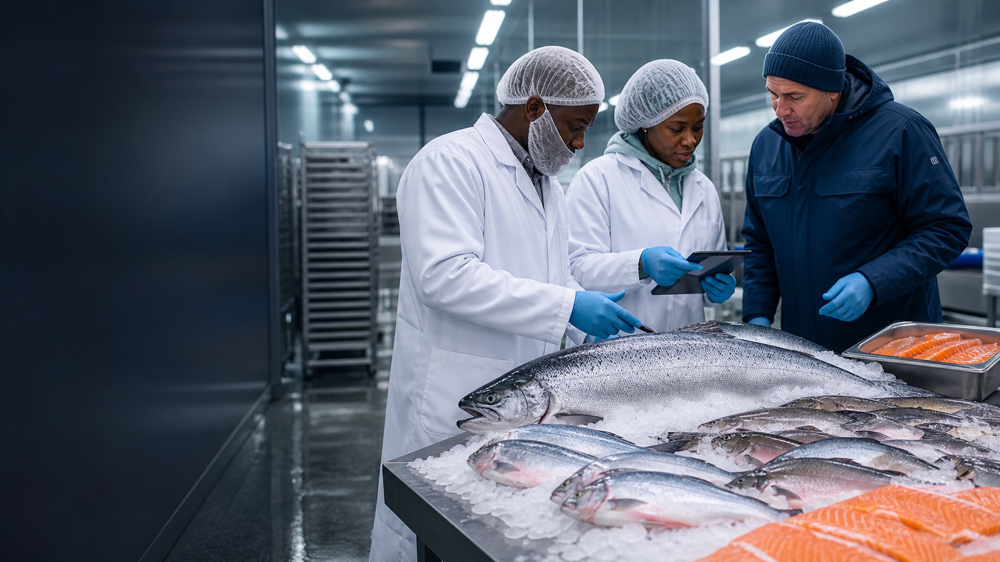

Fisheries & Seafood
A standalone global seafood business.
Seasonal Pacific Northwest opportunities and qualified fisheries relationships across Africa and international markets.

Commercial focus
Seasonal access. International reach.
Gigahash can broker qualified fish and seafood opportunities through relationships in the Pacific Northwest, across the African continent and in wider international markets.
For the Columbia River system, our focus includes seasonal opportunities associated with spring and fall salmon runs, together with smoked salmon during off-season periods. Every opportunity remains subject to lawful harvest, seasonal availability, applicable tribal, federal and state requirements, origin documentation and supplier capability.
Across Africa and other markets, we evaluate a broader range of fish and seafood products according to species, form, volume, cold-chain requirements, export readiness and destination-market rules.